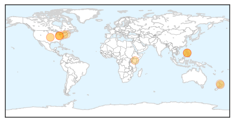

30 Day Trends
Web: 0 alerts, 0 warnings
Twitter: 0 alerts, 0 warnings
Top Articles:
- 0.965
- Confirmed cases of measles in Hawke’s Bay
- 0.959
- Anti-vaxx insanity: New study highlights the dangers of science denialism
- 0.901
- Measles outbreak among Amish in Ohio risks spreading at buggy showcase
- 0.896
- Measles outbreak in Ohio complicates 2 big Amish events
- 0.882
- Measles Outbreak Complicates 2 Big Amish Events
- 0.877
- Measles outbreak complicates 2 big Amish events
- 0.873
- Measles outbreak complicates 2 big Amish events
- 0.858
- Cebu News, The Freeman Sections, The Freeman
- 0.851
- Measles outbreak complicates 2 big Amish events - MyNorthwest
- 0.698
- Childhood Vaccines Again Deemed Generally Safe
- 0.692
- New Vaccine Study Eases Worry About Immunizing Kids, Confirms Safety
- 0.675
- Vaccines have low risk of serious side effects: study
- 0.647
- More confirmed measles cases
Top Tweets:
-
No tweets found for Jul 01, 2014
Web/News Articles

Tweets

Article Locations
Article Confidences